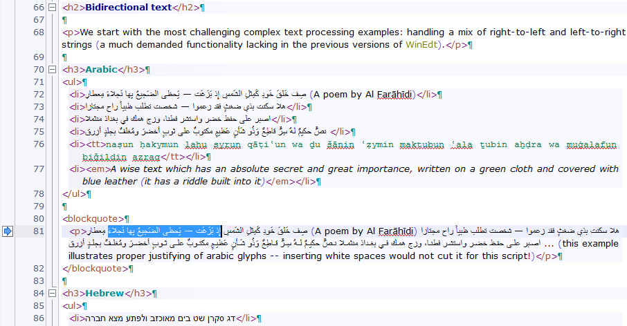

Uniscribe Library at work
WinEdt has been a native Unicode application for many years (since version 7, to be precise). However, until WinEdt 10 it lacked the ability to properly handle complex languages that involve bidirectional text, non-spacing characters, complicated wrapping rules, etc... WinEdt 10 uses a powerful MS Uniscribe library which gives it the ability to overcome these limitations. This HTML document (written in WinEdt 10) illustrates the new functionality.
Pangrams that were used to test the new WinEdt scripting engine with various (complex) languages were obtained from different sources on the internet. I do not speak any such language and I cannot guarantee that they are correct (or even that they may not be found offensive by some users). If native speakers spot any mistakes or have suggestions for improvements please send me your revisions and I will make updates in the future versions.
If you open the HTML source for this page in WinEdt 10 you'll notice that it justifies paragraphs to the specified right margin (rather than leaving ragged text). You will also notice the mix of two fonts (Verdana and Courier New) and the use of fallback fonts whenever the default font lacks glyphs for a particular script. This functionality is new in WinEdt 10.
Below is a snapshot of WinEdt 10 working on this HTML document (note that selected text in bidirectional string is not continuous):

Bidirectional text
We start with the most challenging complex text processing examples: handling a mix of right-to-left and left-to-right strings (a much demanded functionality lacking in the previous versions of WinEdt).
Arabic
- صِف خَلقَ خَودِ كَمِثلِ الشَمسِ إِذ بَزَغَت — يَحظى الضَجيعُ بِها نَجلاءَ مِعطارِ (A poem by Al Farāhīdi)
- هلا سكنت بذي ضغثٍ فقد زعموا — شخصت تطلب ظبياً راح مجتازا
- اصبر على حفظ خضر واستشر فطنا، وزج همك في بغداذ منثملا
- نصٌّ حكيمٌ لهُ سِرٌّ قاطِعٌ وَذُو شَأنٍ عَظيمٍ مكتوبٌ على ثوبٍ أخضرَ ومُغلفٌ بجلدٍ أزرق
- naṣun ḥakymun lahu syrun qāṭiʿun wa ḏu šānin ʿẓymin maktubun ʿala ṯubin aẖḍra wa muġalafun biǧildin azraq
- A wise text which has an absolute secret and great importance, written on a green cloth and covered with blue leather (it has a riddle built into it)
صِف خَلقَ خَودِ كَمِثلِ الشَمسِ إِذ بَزَغَت — يَحظى الضَجيعُ بِها نَجلاءَ مِعطارِ (A poem by Al Farāhīdi) هلا سكنت بذي ضغثٍ فقد زعموا — شخصت تطلب ظبياً راح مجتازا اصبر على حفظ خضر واستشر فطنا، وزج همك في بغداذ منثملا نصٌّ حكيمٌ لهُ سِرٌّ قاطِعٌ وَذُو شَأنٍ عَظيمٍ مكتوبٌ على ثوبٍ أخضرَ ومُغلفٌ بجلدٍ أزرق ... (this example illustrates proper justifying of arabic glyphs -- inserting white spaces would not cut it for this script!)
Hebrew
- דג סקרן שט בים מאוכזב ולפתע מצא חברה
- dg sqrn šṭ bjM mʾwkzb wlptʿ mṣʾ ḥbrh
- A curious fish sailed the sea disappointedly, and suddenly found company
- כך התרסק נפץ על גוזל קטן, שדחף את צבי למים
- kk htrsq npṣ ʿl gwzl qṭn, šdḥp ʾt ṣbj lmjm
- An explosive crashed into a small chick, which pushed my deer into the water.
- שפן אכל קצת גזר בטעם חסה, ודי.
- špn ʾkl qṣt gzr bṭʿm ḥsh, wdj
- A hyrax ate some lettuce flavored carrot and that’s it.
- עטלף אבק נס דרך מזגן שהתפוצץ כי חם
- A “dust bat” escaped through the air conditioner, which exploded due to the heat
- או הנסה אלהים, לבוא לקחת לו גוי מקרב גוי, במסת באתת ובמופתים ובמלחמה וביד חזקה ובזרוע נטויה, ובמוראים גדלים: ככל אשר-עשה לכם יהוה אלהיכם, במצרים—לעיניך (Deuteronomy 4:34)
- לכן חכו לי נאם יהוה ליום קומי לעד, כי משפטי לאסף גוים לקבצי ממלכות, לשפך עליהם זעמי כל חרון אפי, כי באש קנאתי תאכל כל הארץ (Zephaniah 3:8 – the only verse in the Hebrew Bible that contains all medial forms of the letters plus all final forms)
Urdu
- ٹھنڈ میں، ایک قحط زدہ گاؤں سے گذرتے وقت ایک چڑچڑے، باأثر و فارغ شخص کو بعض جل پری نما اژدہے نظر آئے۔
ALA-LC: Ṭhanḍ meṉ, ek qaḥat̤-zadah gāʾoṉ se guẕarte waqt ek ciṛciṛe, bā-ʾas̱ar o-fārig̱ẖ s̱ẖaḵẖṣ ko baʿẓ jal-parī numā aẕẖdahe naz̤ar āʾe.
Translation: In the cold, passing through an arid village, an irritable, influential and leisurely person saw some mermaid-like pythons. - ژالہ باری میں رضائی کو غلط اوڑھے بیٹھی قرأة العین اور عظمٰی کے پاس گھر کے ذخیرے سے آناً فاناً ڈش میں ثابت جو، صراحی میں چائے اور پلیٹ میں زرده آیا۔
Uyghur
- ئاۋۇ بىر جۈپ خوراز فرانسىيەنىڭ پارىژ شەھرىگە يېقىن تاغقا كۆچەلمىدى.
Uyghur Latin Script: Awu bir jüp xoraz Fransiyening Parizh shehrige yëqin taghqa köchelmidi.
Translation: Those two roosters were not able to move to the mountain near Paris in France. - زۆھرەگۈل ئابدۇۋاجىت فرانسىيەنىڭ پارىژدىكى خېلى بىشەم ئوقۇغۇچى.
Uyghur Latin Script: Zöhregül Abduwajit Fransiyening Parizhdiki xëli bishem oqughuchi.
Translation: Zöhregül Abduwajit is a quite unpleasant student in Paris, France.
Complex languages and fallback fonts
This section illustrates some other complex languages (in no particular order) using diacritic marks, non-spacing characters and fallback fonts (since the Verdana font lacks many glyphs).
Thai
- เป็นมนุษย์สุดประเสริฐเลิศคุณค่า กว่าบรรดาฝูงสัตว์เดรัจฉาน จงฝ่าฟันพัฒนาวิชาการ อย่าล้างผลาญฤๅเข่นฆ่าบีฑาใคร ไม่ถือโทษโกรธแช่งซัดฮึดฮัดด่า หัดอภัยเหมือนกีฬาอัชฌาสัย ปฏิบัติประพฤติกฎกำหนดใจ พูดจาให้จ๊ะๆ จ๋าๆ น่าฟังเอยฯ
- bpenM maH nootH sootL bpraL saehR ritH leertF khoonM khaaF gwaapL raawnM daaM fuungR satL daehM ratH chaanR johngM faaL fanM phatH naaM wiH chaaM gaanM aL yaaF laangH phlaanR reuuM khenL khaaF beeM thaaM khraiM maiF theuuR tho:htF gro:htL chaaengF satH heutH hatH daaL hatL aL phaiM meuuanR geeM laaM atL chaaM saiR bpaL dtiL batL bpraL phriH dtikL daL gamM nohtL jaiM phuutF jaaM haiF jaH jaH jaaR jaaR naaF fangM eeuyM
- Humans are most superb and worth more than any animal or beast. Do develop your academic expertise. Do not destroy or kill anyone. Do not be angry or execrate anyone. Practice forgiveness as you would good sportsmanship. Do behave under morals and rules. Speak and confer politely and with servility. (These phrases owned by The Computer Association of Thailand under the Royal Patronage of His Majesty the King)
- นายสังฆภัณฑ์ เฮงพิทักษ์ฝั่ง ผู้เฒ่าซึ่งมีอาชีพเป็นฅนขายฃวด ถูกตำรวจปฏิบัติการจับฟ้องศาล ฐานลักนาฬิกาคุณหญิงฉัตรชฎา ฌานสมาธิ
- Mr.Sangkapan Hengpitakfang, an elderly man who sells bottles, was sued by police because he pilfered Lady Chatchada Chansamati’s watch.
Korean
In current usage, Hangul has 14 simple consonant letters, 6 simple vowel letters, and 4 iotized vowel letters; there are also 5 double consonant letters, 11 consonant clusters, and 11 diphthongs, made from combinations of the simple consonants or simple vowels. Of these, the above phrase contains all the simple consonant letters, simple vowel letters, and iotized vowel letters, along with 1 double consonant letter (ㄲ “gg”), 1 consonant cluster (ㄶ “nh”), and one diphthong (ㅢ “ui”).
- 키스의 고유조건은 입술끼리 만나야 하고 특별한 기술은 필요치 않다.
- Kiseu-ui goyujogeoneun ipsulkkiri mannaya hago teukbyeolhan gisureun pilyochi antha.
- The essential condition for a kiss is that lips meet and there is no special technique required.
- 다람쥐 헌 쳇바퀴에 타고파
- (I) Wanna ride on the chipmunk’s old hamster wheel. or Because Hamster want to ride on old Hamster wheel… (uses all consonants but not all vowels)
Chinese
There are several thousands of Chinese characters; a pangram would be impractical.
- 視野無限廣，窗外有藍天
- The view is infinitely wide. There is blue sky outside the window. (Traditional)
- 微風迎客，軟語伴茶
- The breeze sees the guest in. Soft voice accompanies the tea. (Traditional)
- Innovation in China 中国智造，慧及全球 0123456789
- Innovation in China benefits the whole world. (Simplified)
Japanese
Since there are tens of thousands of kanji characters, Japanese pangrams are ones containing all kana.
Iroha Uta
- いろはにほへと ちりぬるを わかよたれそ つねならむ うゐのおくやま けふこえて あさきゆめみし ゑひもせす（ん）
- irohanihoheto chirinuruwo wakayotareso tsunenaramu uwinookuyama kefukoete asakiyumemishi yehimosesu(n)
- Even the blossoming flowers / Will eventually scatter / Who in this world / is unchanging? / The deep mountains of vanity- / We cross them today / And we shall not see superficial dreams / Nor be deluded.
- 色は匂へど 散りぬるを 我が世誰ぞ 常ならむ 有為の奥山 今日越えて 浅き夢見じ 酔ひもせず（ん）
The poem Iroha uses all 47 classical kana characters exactly once, and it comes in the form of a poem. (The characters ゐ and ゑ are obsolete in modern Japanese.) Iroha is so classically entrenched that any modern construction of a Japanese pangram in classical form is called iroha-uta.
Tori Naku Uta
- とりなくこゑす ゆめさませ みよあけわたる ひんかしを そらいろはえて おきつへに ほふねむれゐぬ もやのうち
- torinakukowesu yumesamase miyoakewataru hinkashiwo sorairohaete okitsuheni hofunemurewinu moyanōchi.
- 鳥啼く声す 夢覚ませ 見よ明け渡る 東を 空色栄えて 沖つ辺に 帆船群れゐぬ 靄の中
- Awaken from dreaming to the voice of the crying bird and see the coming daylight turning the east sky-blue; shrouded in mist is a flock of ships on the open sea
Ametsuchi no Uta
- あめ つち ほし そら / やま かは みね たに / くも きり むろ こけ / ひと いぬ うへ すゑ / ゆわ さる おふ せよ / えのえを なれ ゐて
- 天 地 星 空 / 山 川 峰 谷 / 雲 霧 室 苔 / 人 犬 上 末 / 硫黄 猿 生ふ 為よ / 榎の 枝を 馴れ 居て
Taini no Uta
- たゐにいて なつむわれをそ きみめすと あさりおひゆく やましろの うちゑへるこら もはほせよ えふねかけぬ
- 田居に出で 菜摘むわれをぞ 君召すと 求食り追ひゆく 山城の 打酔へる子ら 藻葉干せよ え舟繋けぬ
More Scripts...
Using fallback fonts the following examples can be handled by WinEdt reasonably well...
Malayalam
- അജവും ആനയും ഐരാവതവും ഗരുഡനും കഠോര സ്വരം പൊഴിക്കെ ഹാരവും ഒഢ്യാണവും ഫാലത്തില് മഞ്ഞളും ഈറന് കേശത്തില് ഔഷധ എണ്ണയുമായി ഋതുമതിയും അനഘയും ഭൂനാഥയുമായ ഉമ ദുഃഖഛവിയോടെ ഇടതു പാദം ഏന്തി ങ്യേയാദൃശം നിര്ഝരിയിലെ ചിറ്റലകളെ ഓമനിക്കുമ്പോള് ബാലയുടെ കണ്കളില് നീര് ഊര്ന്നു വിങ്ങി.
Cherokee
- ᎠᏍᎦᏯᎡᎦᎢᎾᎨᎢᎣᏍᏓᎤᎩᏍᏗᎥᎴᏓᎯᎲᎢᏔᎵᏕᎦᏟᏗᏖᎸᎳᏗᏗᎧᎵᎢᏘᎴᎩ ᏙᏱᏗᏜᏫᏗᏣᏚᎦᏫᏛᏄᏓᎦᏝᏃᎠᎾᏗᎭᏞᎦᎯᎦᏘᏓᏠᎨᏏᏕᏡᎬᏢᏓᏥᏩᏝᎡᎢᎪᎢ ᎠᎦᏂᏗᎮᎢᎫᎩᎬᏩᎴᎢᎠᏆᏅᏛᎫᏊᎾᎥᎠᏁᏙᎲᏐᏈᎵᎤᎩᎸᏓᏭᎷᏤᎢᏏᏉᏯᏌᏊ ᎤᏂᏋᎢᏡᎬᎢᎰᏩᎬᏤᎵᏍᏗᏱᎩᎱᎱᎤᎩᎴᎢᏦᎢᎠᏂᏧᏣᏨᎦᏥᎪᎥᏌᏊᎤᎶᏒᎢᎢᏡᎬᎢ ᎹᎦᎺᎵᏥᎻᎼᏏᎽᏗᏩᏂᎦᏘᎾᎿᎠᏁᎬᎢᏅᎩᎾᏂᎡᎢᏌᎶᎵᏎᎷᎠᏑᏍᏗᏪᎩ ᎠᎴ ᏬᏗᏲᏭᎾᏓᏍᏓᏴᏁᎢᎤᎦᏅᏮᏰᎵᏳᏂᎨᎢ.
Hindi
- ऋषियों को सताने वाले दुष्ट राक्षसों के राजा रावण का सर्वनाश करने वाले विष्णुवतार भगवान श्रीराम, अयोध्या के महाराज दशरथ के बड़े सपुत्र थे।
Sanskrit
- कः खगौघाङचिच्छौजा झाञ्ज्ञोऽटौठीडडण्ढणः। तथोदधीन् पफर्बाभीर्मयोऽरिल्वाशिषां सहः।।
Tibetan
- ༈ དཀར་མཛེས་ཨ་ཡིག་ལས་འཁྲུངས་ཡེ་ཤེས་གཏེར། །ཕས་རྒོལ་ཝ་སྐྱེས་ཟིལ་གནོན་གདོང་ལྔ་བཞིན། །ཆགས་ཐོགས་ཀུན་བྲལ་མཚུངས་མེད་འཇམ་བྱངས་མཐུས། །མ་ཧཱ་མཁས་པའི་གཙོ་བོ་ཉིད་གྱུར་ཅིག།
Myanmar
- သီဟိုဠ်မှ ဉာဏ်ကြီးရှင်သည် အာယုဝဍ္ဎနဆေးညွှန်းစာကို ဇလွန်ဈေးဘေးဗာဒံပင်ထက် အဓိဋ္ဌာန်လျက် ဂဃနဏဖတ်ခဲ့သည်။
Javanese
This poem is used as the ordering of the Javanese script (it is a perfect pangram, which means there is only one instance of each letter).
- ꧋ ꦲꦤꦕꦫꦏ꧈ ꦢꦠꦱꦮꦭ꧈ ꦥꦝꦗꦪꦚ꧈ ꦩꦒꦧꦛꦔ꧉
- Hanacaraka, datasawala, padhajayanya, magabathanga.
- There (were) two messengers; (they) had animosity (among each other); (they were) equally powerful (in fight); here are the corpses.
WinEdt will not handle this script well (in combination with other fallback fonts) because WinEdt currently uses a fixed line height and the descent for this font requires a larger value or else the font is too small to be legible (or else the decent would have to be clipped)...
Problematic scripts...
Windows fonts may not contain glyphs for some scripts. This may change in the future...
Klingon
On my Windows 10 no font contains glyphs in this range (browser fails to display them as well):
-
- qajunpaQHeylIjmo’ batlh DuSuvqang charghwI’ ‘It.
- Because of your apparent audacity the depressed conqueror is willing to fight you.
Not so complex...
Below are a few more examples involving Greek and Cyrillic alphabet. Ordinary unicode functionality (without complex processing) is sufficient to handle these scripts.
Greek
- Ταχίστη αλώπηξ βαφής ψημένη γη, δρασκελίζει υπέρ νωθρού κυνός Takhístè alôpèx vaphês psèménè gè, draskelízei ypér nòthroý kynós
- The quick brown fox jumps over the lazy dog (where brown is assigned by “colour of roasted earth”)
- Ξεσκεπάζω τὴν ψυχοφθόρα βδελυγμία. Xeskepazó tin psychofthóra vdelygmía.
- I uncover the soul-destroying abhorrence.
- Ζαφείρι δέξου πάγκαλο, βαθῶν ψυχῆς τὸ σῆμα.
- Receive an excellent sapphire, denoting profundity of soul.
- διαφυλάξτε γενικά τη ζωή σας από βαθειά ψυχικά τραύματα
- protect in general your life from deep psychological wounds
Russian
Traditional telegraph test; lacks ъ and ё):- В чащах юга жил бы цитрус? Да, но фальшивый экземпляр!
- Would a citrus live in the thickets of the south? Yes, but only a fake one!
- В чащах юга жил бы цитрус? Да, но фальшивый экземпляръ!
- Эх, чужак, общий съём цен шляп (юфть) – вдрызг!
- Hey, stranger, the general takings from prices of hats (made from a thick leather) have completely crashed!
- Любя, съешь щипцы, — вздохнёт мэр, — Кайф жгуч!
- The mayor will sigh, “Eat the pliers with love; pleasure burns!”
- Съешь же ещё этих мягких французских булок, да выпей чаю.
- S’eš’ že eŝë ètih mjagkih francuzskih bulok, da vypej čaju.
- So eat more of these soft French loaves, and have some tea!
- Широкая электрификация южных губерний даст мощный толчок подъёму сельского хозяйства.
- Widespread electrification of southern guberniyas will give a powerful incentive to the rise of agriculture.
- Разъяренный чтец эгоистично бьёт пятью жердями шустрого фехтовальщика.
- An enraged narrator selfishly beats a nimble fencer with five poles.
- Наш банк вчера же выплатил Ф.Я. Эйхгольду комиссию за ценные вещи.
- As of yesterday, our bank already remitted to F.J. Eichhold a commission payment for the valuables.
Easy breezy...
There are hundreds (if not thousands) of pangrams in many languages. However, most are based on phonetic Latin alphabet with a few language-specific diacritical marks (included in unicode) and do not require any complex text processing functionality. Pretty much all European (and many other) languages fall in this category...
Esperanto
- Eble ĉiu kvazaŭ-deca fuŝĥoraĵo ĝojigos homtipon.
- Maybe every quasi-fitting bungle-choir makes a human type happy.
- Laŭ Ludoviko Zamenhof bongustas freŝa ĉeĥa manĝaĵo kun spicoj.
- According to Ludwig Zamenhof, fresh Czech food with spices tastes good.
Latin
- Sic fugiens, dux, zelotypos, quam Karus haberis.
- Thus fleeing, O leader, you are regarded with jealousy like Karus.
Includes the letters k, y and z, used for words derived from Greek, but not the letters j, v or w, consonants that evolved from the vowels i and u.
What is a Pangram?
This section is borrowed from Wikipedia:
A pangram (Greek: παν γράμμα, pan gramma, "every letter") or holoalphabetic sentence for a given alphabet is a sentence using every letter of the alphabet at least once. Pangrams have been used to display typefaces, test equipment, and develop skills in handwriting, calligraphy, and keyboarding.
The best known English pangram is "The quick brown fox jumps over the lazy dog." It has been used since at least the late 19th century, was utilized by Western Union to test Telex / TWX data communication equipment for accuracy and reliability, and is now used by a number of computer programs (most notably the font viewer built into Microsoft Windows) to display computer fonts.
An example in another language is the German Victor jagt zwölf Boxkämpfer quer über den großen Sylter Deich, containing all letters used in German, including every umlaut (ä, ö, ü) plus the ß. It has been used since before 1800.
Short pangrams in English are more difficult to come up with and tend to use uncommon words, because the English language uses some letters (especially vowels) much more frequently than others. Longer pangrams may afford more opportunity for humor, cleverness, or thoughtfulness. A perfect pangram contains every letter of the alphabet only once and can be considered an anagram of the alphabet; it is the shortest possible pangram. An example is the phrase "Cwm fjord bank glyphs vext quiz" (cwm, a loan word from Welsh, means a steep-sided valley, particularly in Wales).